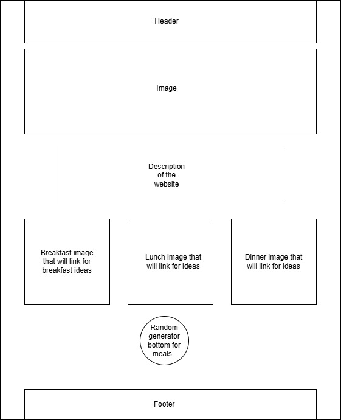

Nourish on a Budget
Website Plan
I chose the name Nourish on a Budget because it communicates two key ideas clearly: nourishing, wholesome food and budget-friendly cooking. It is simple, memorable, and directly reflects the purpose of the site.
Optional domain availability: nourishonabudget.com (domain availability not required for this class).
Site Purpose
Its purpose is to make nutritious eating accessible to everyone, regardless of cooking experience or financial limitations. By focusing on low‑cost ingredients, clear instructions, and family‑friendly options, the site aims to support households in creating wholesome meals without overspending.
Scenarios
How can I plan a week of affordable dinners without spending hours in the kitchen?
What kinds of healthy meals can I make when I’m on a tight budget?
Is it really possible to eat nutritious meals without spending a lot of money?
Color Schema
header-background: #2e4004 |Background color
Soft-warm: #F7F7F2 | Font Color
Light beige: #EFEBD8 | Font Color
Cool gray: #E3E7E5 | Font Color
Charcoal: #2E2E2E | Background color
Green: #82B411; | Title color
Typography
Playfair Display for paragraph
Boldonse font for title
Wireframes
